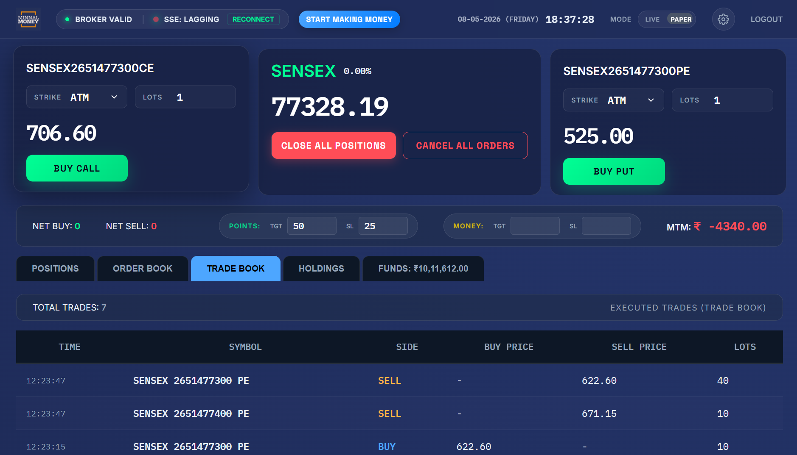

Business Problem & Core Challenge
⚠️ Traditional Retail Trading Bottlenecks
Traditional options trading forces traders to navigate multiple screens to monitor index LTP, locate option strikes, check expiry dates, track Call/Put prices, place orders, monitor positions, calculate P&L, and manage stop-losses. Fast-moving market pullbacks amplify manual errors and delay execution.
High-Level Solution Architecture
Trading UI (HTML + CSS + Vanilla JavaScript)
↓ SSE / HTTP Requests
Flask Backend (minnalapp.py Routes + Business Logic)
↓
Flattrade Service (REST + WebSocket API)
Paper Trading Service (Simulated Engine)
↓
Flattrade API / Noren API Infrastructure
View Preserved Raw ASCII Architecture Diagram
┌─────────────────────────┐
│ Trading UI │
│ HTML + CSS + JavaScript │
└────────────┬────────────┘
│
SSE / HTTP Requests
│
┌────────────▼────────────┐
│ Flask Backend │
│ Routes + Business Logic │
└────────────┬────────────┘
│
┌──────────────────┴──────────────────┐
│ │
┌───────▼────────┐ ┌─────────▼────────┐
│ Flattrade │ │ Paper Trading │
│ Service │ │ Service │
└───────┬────────┘ └─────────┬────────┘
│ │
REST + WebSocket Simulated Data
│
┌───────▼────────┐
│ Flattrade API │
│ / Noren API │
└────────────────┘
Core Subsystem Breakdown
Frontend Layer
Responsive Dark Terminal UI
HTML5, CSS3, & Vanilla JS with Flexbox/Grid layout. Features market price panels, Call/Put option cards, expiry/strike selectors, and tabbed portfolio feeds.
Backend Services
Flask Backend (minnalapp.py)
Modular Flask routes (`routes/auth.py`, `routes/dashboard.py`) and underlying services (`flattrade_service.py`, `websocket_manager.py`, `paper_trading_service.py`).

FIGURE 2.1: LIVE MARKET MONITORING & REAL-TIME SSE DATA PIPELINE INTERFACE
MINNAL-STREAM-01
Real-Time Market Data Stream Flow
Flattrade WebSocket Feed
↓
WebSocket Manager (Tick Processing Queue)
↓
SSE Broadcast Worker (/stream Endpoint)
↓
Connected Browser Clients (EventSource UI Handlers)
View Preserved Raw ASCII Stream Diagram
Flattrade WebSocket → WebSocket Manager → Market Tick Processing → Message Queue → SSE Broadcast Worker → Connected Browser Clients → Live Dashboard Updates
Flattrade REST API vs WebSocket Responsibilities
REST API Layer
REST API Operations
• Authentication & TOTP login.
• Fetching expiry dates & searching instruments.
• Retrieving positions, orders, trades, holdings, & limits.
• Submitting new orders, cancelling, & closing positions.
WebSocket & SSE Layer
WebSocket & SSE Real-Time Feeds
• WebSocket: Real-time market ticks & order status events.
• SSE (/stream): EventSource feeds routing `market_update`, `account_update`, and `order_update` to browser UI.
Decoupled Queue Architecture
Decouples high-frequency broker WebSocket callbacks from browser rendering via a thread-safe message queue worker, preventing UI freezes during fast market surges.
WebSocket Manager
SSE Queue Worker
Zero Refresh UI
Options Execution Workflow & Controls
Automated Selection
Automated Strike Engine
1. Select Index (NIFTY / BANKNIFTY / SENSEX).
2. Retrieve Expiries & calculate ATM Strike from live LTP.
3. Stream real-time Call (CE) & Put (PE) option quotes.
4. Select Quantity & trigger 1-click execution.
1-Click Execution
Call & Put Trading Controls
Dedicated dashboard triggers for: Buy Call, Sell Call, Buy Put, and Sell Put. Automatically formats symbol, expiry, strike, option type, lot size, and order type for Flattrade submission.
Dual-Mode Architecture: LIVE vs PAPER
Trading Dashboard UI
↓ Mode Selector Toggle (LIVE / PAPER)
LIVE Mode → Flattrade Service → Broker REST/WebSocket API
PAPER Mode → Paper Trading Service → Simulated Engine
View Preserved Raw ASCII Dual-Mode Diagram
Trading Dashboard
│
┌───────┴───────┐
│ │
LIVE PAPER
│ │
Flattrade Service Paper Service
│ │
Real Broker API Simulation Engine
Position & Portfolio Monitoring Panels
Real-Time P&L
Positions & Orders
Displays live MTM P&L, open positions, executed orders, and order status updates.
Account Limits
Holdings & Funds
Tracks equity holdings, collateral margins, cash balance, and available margin limits.
Background Cache
Data Sync Worker
Background sync worker polls broker REST endpoints to keep account state synchronized.

FIGURE 3.1: PROFESSIONAL OPTIONS TRADING DASHBOARD & GLOBAL EXIT RISK SYSTEM
MINNAL-DASH-02
Automated Risk Management & Global Exit System
🛡️ Global Exit System Workflow
Configurable monetary Target and Stop-Loss thresholds per environment (LIVE vs PAPER). When portfolio P&L crosses limits, the system triggers automated global square-off:
Live/Paper P&L Evaluation
↓
Target / Stop-Loss Threshold Triggered
↓
Global Exit Triggered → Close All Positions & Cancel Orders
↓
Broadcast Emergency Exit Event to Dashboard
Key Technical Challenges & Engineering Solutions
Challenge 1 & 2
Real-Time Delivery & Stream Split
• Real-Time Delivery: WebSocket + SSE queue pipeline eliminates page refreshes.
• Stream Separation: WebSocket handles high-freq ticks; background polling handles account feeds to optimize bandwidth.
Challenge 3 & 4
Multi-Client Queues & Dual Engine
• Multi-Client Queue: Dedicated per-session SSE queues distribute ticks cleanly.
• Dual Trading Engine: `PaperTradingService` replicates live workflows without mixing simulated and broker orders.
Technology Stack Specifications
Backend Core
Python & Flask
Python 3.12, Flask, Flask-Login, TOTP Auth, Threading, Requirements.txt.
Broker APIs
Flattrade & Noren API
Flattrade REST API, Noren REST/WebSocket API, Paper Trading Engine.
Frontend Stream
JavaScript & SSE
HTML5, CSS3 Dark Terminal UI, Vanilla JS, EventSource SSE (/stream).
Project Directory Structure Tree
Trading Terminal/
├── minnalapp.py
├── routes/ (auth.py, dashboard.py)
├── services/ (flattrade_service.py, websocket_manager.py, paper_trading_service.py, background_tasks.py, NorenRestApiPy/)
├── templates/ (login.html, broker_auth.html, dashboard.html)
└── static/ (css/style.css, js/main.js)
End-to-End User Flow & Outcomes
User Workflow Sequence: Login → Flattrade TOTP Auth → Session Established → Start Market Stream → WebSocket Ticks → Select Index & Expiry → Identify Strike → Monitor CE/PE → Execute Trade → Order Update → Position Created → Monitor P&L → Risk Evaluation → Global Exit / Manual Square-Off.
Engineering Outcomes & Key Learnings
Successfully delivered a unified web-based trading terminal integrating Python + Flask + JS + REST + WebSocket + SSE + Flattrade + Paper Trading. Demonstrates practical expertise in real-time streaming, FinTech broker API integration, multi-threaded event processing, and automated risk controls.